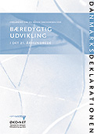

|  | DanmarksDeklarationen - erklæring om en dansk dagsorden for bæredygtig udvikling i det 21. århundrede Kort version (pdf-fil) Taler og stemningsbilleder ved overrækkelsen til regering og Folketing i januar 2001 Program for overrækkelsen |
| In English | Organisationer der har tilsluttet sig DanmarksDeklarationen |
| Udprint underskriftspapir - til brug ved tilslutning |